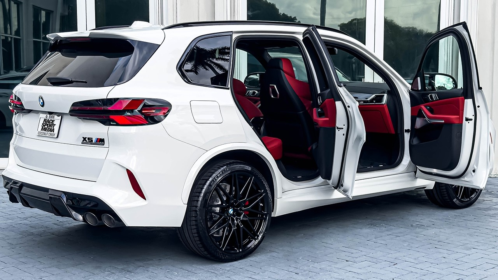

May we introduce the X5 M

Unser bisher vielseitigster BMW M zieht alle Blicke auf
sich. Das geräumige und hochwertige Interieur bietet Platz für fünf
Erwachsene – und so viel Beinfreiheit, dass sich selbst der größte
Mitfahrer bequem ausstrecken kann. "BMW X5 M – für alle,
die mehr wollen."
Gepäckraum
Mit bis zu 1.390 Litern Fassungsvermögen bietet der
geräumige Gepäckraum des neuen BMW M X5 endlose
Möglichkeiten für den Städtetrip oder die Landpartie.
Freihändig Öffnen

Sie haben die Hände voll oder möchten Ihr Gepäck nicht auf den Boden
stellen? Dann reicht Ihnen der BMW Comfort Access eine
helfende Hand beim Beladen des großzügigen Gepäckraums des
BMW M X5. Bewegen Sie einfach Ihren Fuß unter der
Ladekante und schon öffnet sich die Heckklappe automatisch. Mit einer
zweiten Fußbewegung schließt sie sich wieder. Eine echte Hilfe, wenn Sie
Ihre Kinder, Haustiere oder zahlreiche
Einkäufe tragen. Verfügbar mit dem
Komfortzugang.
Vorteile des BMW X5 M
- Schnell und wendig
- Adaptives M Fahrwerk
- Hohe Effizienz bei maximaler Performance
- Viel Platz
Der neue BMW X5 M im Test
Der neue BMW X5 M ist größer, robuster und
leistungsstärker denn je. Mit seinem stabilen neuen Design und dem
innovativen M xDrive-Allradantrieb ist er wie dafür
geschaffen, Landstraßen, Offroad-Terrain oder auch Stadtgebiete zu
erkunden. Er versetzt Sie in einen Adrenalinrausch, der
sich über den Sehnerv in dem hinteren Teil Ihres Gehirns ausbreitet.
xDrive
Behalten Sie in jeder Situation die Kontrolle. Der intelligente
Allradantrieb verteilt die Leistung dynamisch auf Vorder- und Hinterachse.
Je nach Fahrstil und Straßenhaftung berechnet das
M xDrive-System das optimale Drehmoment für jedes Rad. In
Extremsituationen kann das gesamte Antriebsmoment auf die Hinterachse
übertragen werden – so befreien Sie sich aus jeder Lage und erleben puren
Fahrspaß.